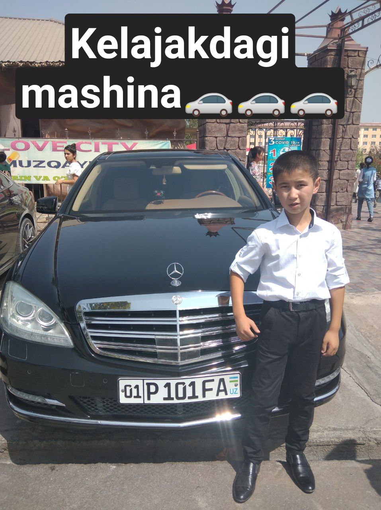
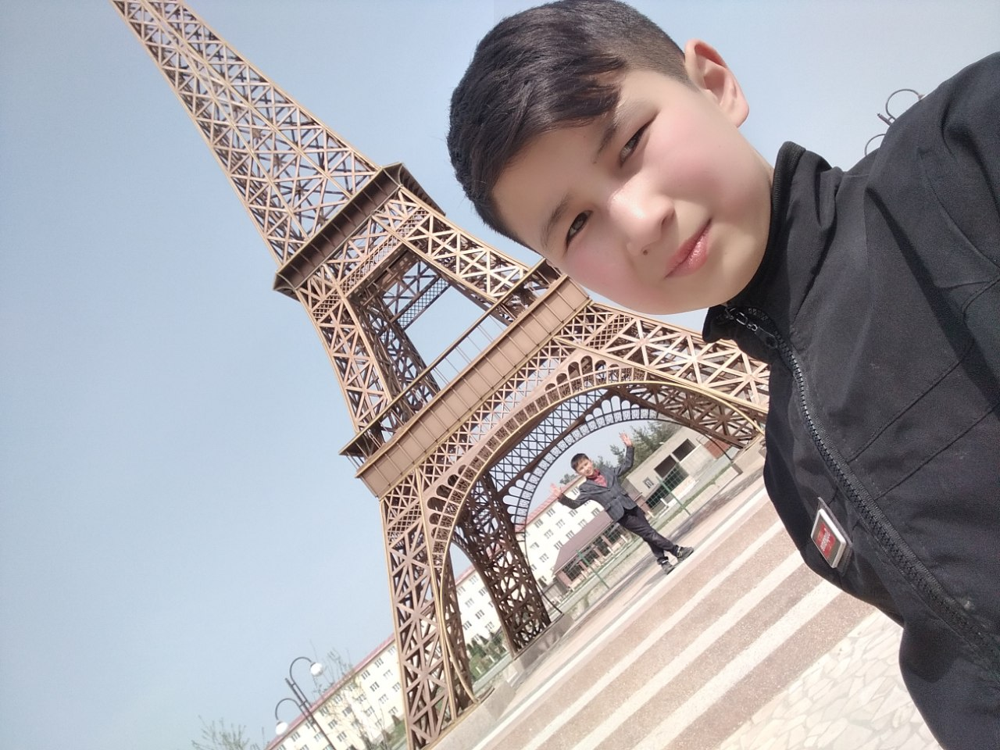
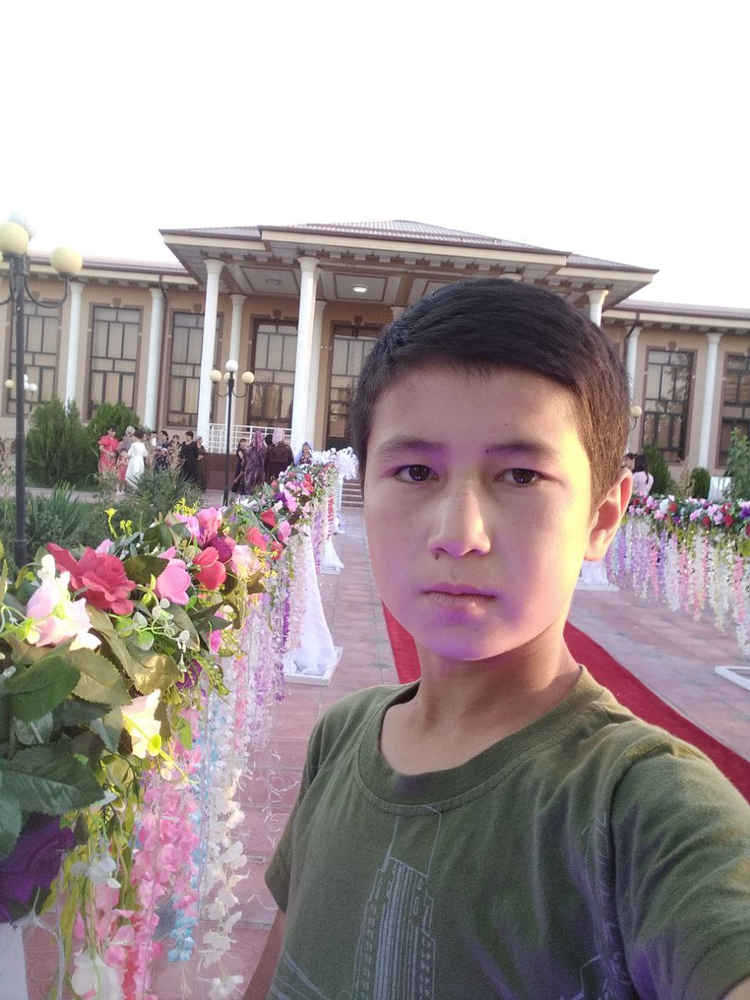
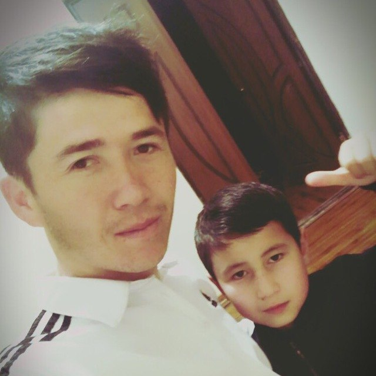
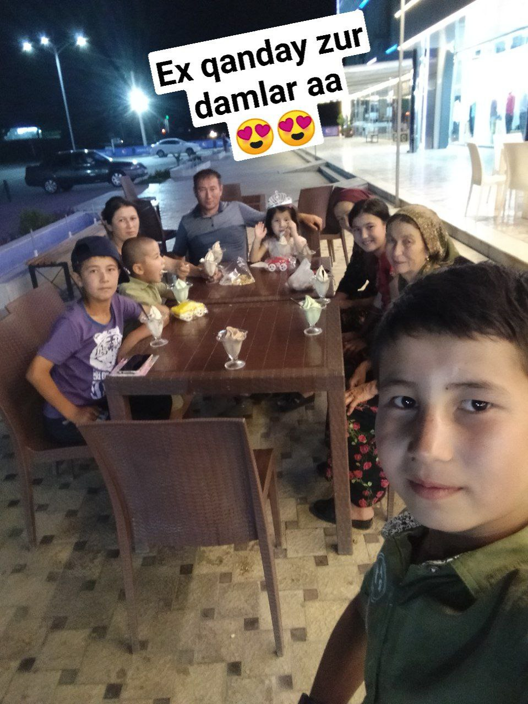
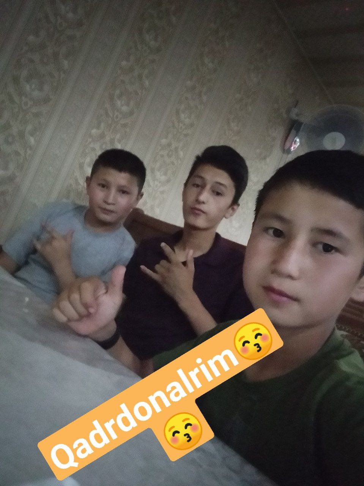
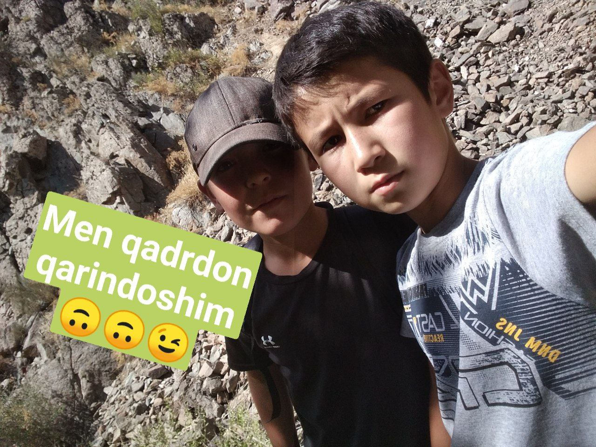

Assalomu alaykum hammmaga. Tongizgiz xayrli o`tsin yana mana men Asilbek_programmer siz uchun bir she`r erinmay o`qingizlar
Sizni o’ylab-o’ylab bugun ham o’tdi
Tun cho’kib borliqni domiga yutdi.
Kimdur meni eslab, kimdur unutdi.
Yuragim eridi shirin tush kabi,
Sizni o’ylab-o’ylab bugun ham o’tdi.
Sizni qattiq sevgan yurak sizniki!
Uyqusiz tunlarim qalbim sizniki,
Ko’zimning yoshi ko’nglim sizniki,
Shiring orzularim dardim sizniki,
Sizni qattiq sevgan yurak sizniki!
Mehr qolur
O‘tar qancha yillar to‘zoni,
Yulduzlar – ko‘zyoshi samoni.
O‘tar inson yaxshi-yomoni,
Mehr qolur, muhabbat qolur.
Qorachug‘da porlagan o‘sha,
Iqboliga chorlagan o‘sha.
Dunyoni tor aylagan o‘sha –
Mehr qolur, muhabbat qolur.
Anor sening yuzlaring, suluv,
Xumor sening ko‘zlaring, suluv,
Yodda qolmas so‘zlaring, suluv,
Mehr qolur, muhabbat qolur.
Oqib ketdi suvlarda Tohir,
Zuhro yig‘lab qoldi qon bag‘ir.
Kelganda ham qiyomat oxir,
Mehr qolur, muhabbat qolur.
Nima deysan, ey, g‘ayur inson?
G‘iybatlaring qildi meni qon.
Sen ham bir kun o‘tursan, inon,
Mehr qolur, muhabbat qolur.







VEDIO___TIME VEDIO___VAQTI
sog` bo`lingizlar shuncha payt vaqtingiz ketdi men uchun endi hayrlashamiz